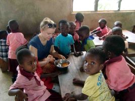

Many children in Africa suffer from malnutrition due to poverty, food shortages, and poor healthcare. This leads to stunted growth, weak immune systems, and increased illness. Conflict, climate change, and economic struggles make the situation worse. More efforts are needed to ensure all children get enough food to stay healthy.

This volunteer has dedicated their time and effort to supporting children in Africa affected by famine, making a lasting impact in communities in need. Through direct aid, education, and compassion, they have helped provide essential resources like food, clean water, and medical care to vulnerable children, offering hope for a better future. Their selfless commitment to alleviating hunger and empowering local communities embodies the spirit of global solidarity and kindness.